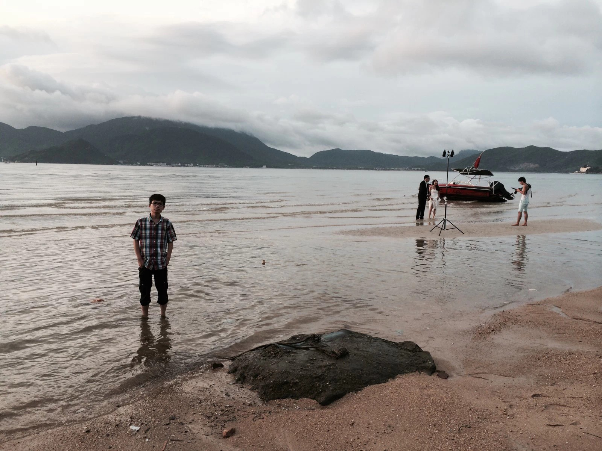
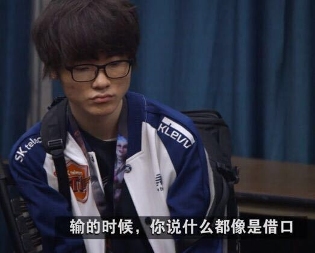

写在第一篇博客
其实建一个博客真不知道是为了什么，累死累活的终于建好了，尽管很垃圾！但是这个过程还是挺开心的，虽然无数次想把电脑砸掉， 不过总算磕磕绊绊的完成了。
这一段过得挺充实的，前所未有的踏实。玩了一整个大学，终于能静下心来好好的学习，好像找回了高三的感觉。每天中午我都会 回去看开讲啦，有时候瞬间会感觉自己的时间被偷走了。想象中的我绝不应该是这个样子的，可是现实就是这样。大学浑浑噩噩的度过， 在快要结尾的时候回头一看，我到底干了些什么？啥都没有，除了游戏。哎
我回去翻了一下自己以前的照片，这张应该是14年在深圳的时候。。。感觉那个时候充满了希望，但是在留级之后特别是大学留级之后 感觉自己的人生轨迹都翻写了。那个时候真的是生无可恋，唯一让我继续活下去的动力可能就只有游戏了吧。
我其实感觉自己很幸运，在自己最难过的时候没有想过去做一些不好的事，而是选择了游戏这个避风港。我很幸运的另一点就是我遇到了一个 和我有共同爱好的废物。。。一起在网吧几天几夜。。。。哎。。。虽然现在不在一起了，但是也希望大哥能一帆风顺吧。
玩了几年什么都没学会，必修必挂的我真是不知道毕了业能去干什么。我也不知道自己相比于别人有什么优势，真的感觉大学白上了， 直到当我来到北京，见识了许多人以后，才明白很多东西也不过如此，只要你不放弃希望，是金子总会发光！
ps:最后放一张Faker2016年输掉msi的采访图片。去年s7SKT没有拿到冠军，但是在我心里Faker是值得尊敬的一个人。 不管别的方面，就坚持自己的梦想这方面我觉得他很纯粹。
